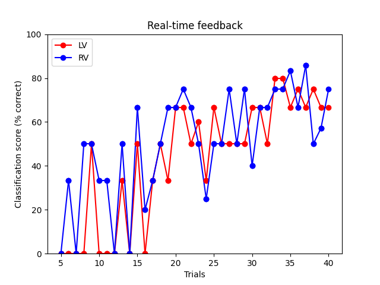

Note
Go to the end to download the full example code
Real-time feedback for decoding :: Server Side#
This example demonstrates how to setup a real-time feedback mechanism using StimServer and StimClient.
The idea here is to display future stimuli for the class which is predicted less accurately. This allows on-demand adaptation of the stimuli depending on the needs of the classifier.
This will execute the rt_feedback_client.py script in a separate
process so that both can run concurrently.
All brain responses are simulated from a fiff file to make it easy to test. However, it should be possible to adapt this script for a real experiment.
Opening raw data file /home/circleci/mne_data/MNE-sample-data/MEG/sample/sample_audvis_filt-0-40_raw.fif...
Read a total of 4 projection items:
PCA-v1 (1 x 102) idle
PCA-v2 (1 x 102) idle
PCA-v3 (1 x 102) idle
Average EEG reference (1 x 60) idle
Range : 6450 ... 48149 = 42.956 ... 320.665 secs
Ready.
Reading 0 ... 41699 = 0.000 ... 277.709 secs...
Running subprocess: /home/circleci/python_env/bin/python rt_feedback_client.py
Trial 5 accuracy: 0.0%
Trial 6 accuracy: 16.7%
Trial 7 accuracy: 0.0%
Trial 8 accuracy: 25.0%
Trial 9 accuracy: 50.0%
Trial 10 accuracy: 16.7%
Trial 11 accuracy: 16.7%
Trial 12 accuracy: 0.0%
Trial 13 accuracy: 41.7%
Trial 14 accuracy: 0.0%
Trial 15 accuracy: 58.3%
Trial 16 accuracy: 10.0%
Trial 17 accuracy: 33.3%
Trial 18 accuracy: 50.0%
Trial 19 accuracy: 50.0%
Trial 20 accuracy: 66.7%
Trial 21 accuracy: 70.8%
Trial 22 accuracy: 58.3%
Trial 23 accuracy: 55.0%
Trial 24 accuracy: 29.2%
Trial 25 accuracy: 58.3%
Trial 26 accuracy: 50.0%
Trial 27 accuracy: 62.5%
Trial 28 accuracy: 50.0%
Trial 29 accuracy: 62.5%
Trial 30 accuracy: 53.3%
Trial 31 accuracy: 66.7%
Trial 32 accuracy: 58.3%
Trial 33 accuracy: 77.5%
Trial 34 accuracy: 77.5%
Trial 35 accuracy: 75.0%
Trial 36 accuracy: 70.8%
Trial 37 accuracy: 76.2%
Trial 38 accuracy: 62.5%
Trial 39 accuracy: 61.9%
Trial 40 accuracy: 70.8%
Shutting down ...
# Author: Mainak Jas <mainak@neuro.hut.fi>
#
# License: BSD (3-clause)
import subprocess
import sys
import time
import numpy as np
import matplotlib.pyplot as plt
from sklearn import preprocessing
from sklearn.svm import SVC
from sklearn.pipeline import Pipeline
from sklearn.model_selection import train_test_split
from sklearn.metrics import confusion_matrix
import mne
from mne.datasets import sample
from mne.utils import running_subprocess
from mne_realtime import StimServer, MockRtClient
from mne.decoding import Vectorizer
print(__doc__)
# Load fiff file to simulate data
data_path = sample.data_path()
raw_fname = data_path / 'MEG' / 'sample' / 'sample_audvis_filt-0-40_raw.fif'
raw = mne.io.read_raw_fif(raw_fname, preload=True)
fig, ax = plt.subplots(1)
ax.set(xlabel='Trials', ylabel='Classification score (% correct)',
title='Real-time feedback')
isi = 0.01 # this is unrealistic, but will make the example run quickly
n_trials = 40 # number of trials to simulate
n_start = 5 # number of trials to run before decoding
rng = np.random.RandomState(0)
# Instantiating stimulation server
# The with statement is necessary to ensure a clean exit
with StimServer(port=4218) as stim_server:
# The channels to be used while decoding
picks = mne.pick_types(raw.info, meg='grad')
rt_client = MockRtClient(raw)
# Constructing the pipeline for classification
# don't highpass filter because of short signal length of epochs
scaler = preprocessing.StandardScaler()
vectorizer = Vectorizer()
clf = SVC(C=1, kernel='linear')
concat_classifier = Pipeline([('vector', vectorizer),
('scaler', scaler), ('svm', clf)])
ev_list = list(rng.randint(3, 5, n_start)) # some random starting events
score_lv, score_rv, score_x = [], [], []
command = [sys.executable, 'rt_feedback_client.py']
with running_subprocess(command, after='kill',
stdout=subprocess.PIPE, stderr=subprocess.PIPE):
for ii in range(n_trials):
# Tell the stim_client about the next stimuli
stim_server.add_trigger(ev_list[ii])
# Collecting data
if ii == 0:
X = rt_client.get_event_data(event_id=ev_list[ii], tmin=-0.2,
tmax=0.5, picks=picks,
stim_channel='STI 014')[None, ...]
y = ev_list[ii]
else:
X_temp = rt_client.get_event_data(
event_id=ev_list[ii], tmin=-0.2, tmax=0.5, picks=picks,
stim_channel='STI 014')
X_temp = X_temp[np.newaxis]
X = np.concatenate((X, X_temp), axis=0)
time.sleep(isi) # simulating the isi
y = np.append(y, ev_list[ii])
# Start decoding after collecting sufficient data
if ii >= n_start - 1:
# Now start doing rtfeedback
X_train, X_test, y_train, y_test = train_test_split(
X, y, test_size=0.2, random_state=rng)
y_pred = concat_classifier.fit(X_train,
y_train).predict(X_test)
cm = confusion_matrix(y_test, y_pred)
score_lv.append(float(cm[0, 0]) / sum(cm, 1)[0] * 100)
score_rv.append(float(cm[1, 1]) / sum(cm, 1)[1] * 100)
score_x.append(ii + 1)
# add events for the lower-performing class
ev_list.append(3 if score_lv[-1] < score_rv[-1] else 4)
print('Trial %d accuracy: %0.1f%%'
% (ii + 1, np.mean([score_lv[-1], score_rv[-1]])))
# Now plot the accuracy
lvh = ax.plot(score_x[-2:], score_lv[-2:],
c='r', marker='o', ls='-')[0]
rvh = ax.plot(score_x[-2:], score_rv[-2:],
c='b', marker='o', ls='-')[0]
ax.set(ylim=[0, 100])
ax.legend((lvh, rvh), ('LV', 'RV'), loc='upper left')
plt.draw()
plt.pause(0.01)
Total running time of the script: ( 0 minutes 3.802 seconds)
Estimated memory usage: 163 MB